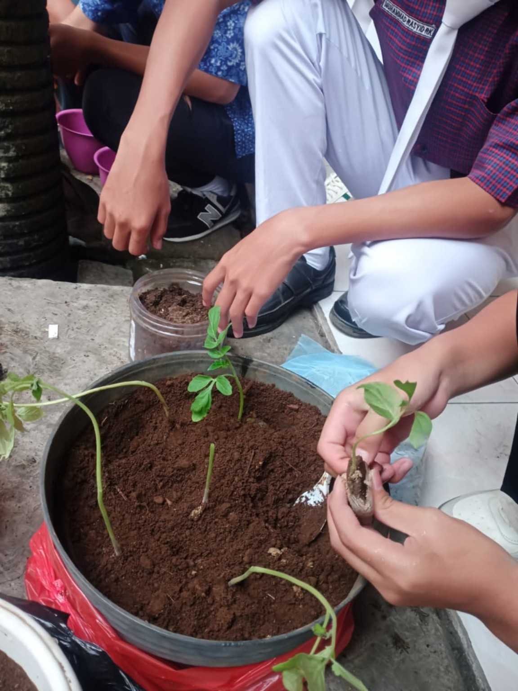
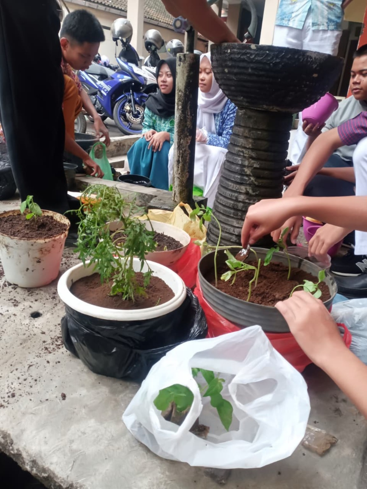
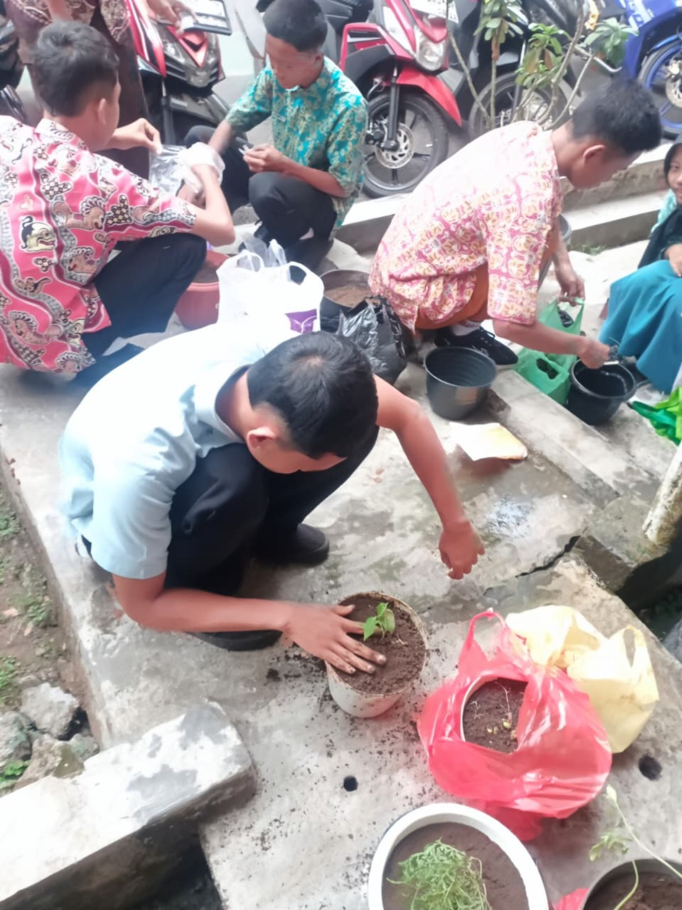

📸 Dokumentasi Kegiatan
Kegiatan penanaman dan perawatan Green Corner Kelompok 3.

Proses kegiatan penanaman.

Kegiatan menanam tanaman.

Dokumentasi kegiatan Green Corner.

Perawatan tanaman Green Corner.